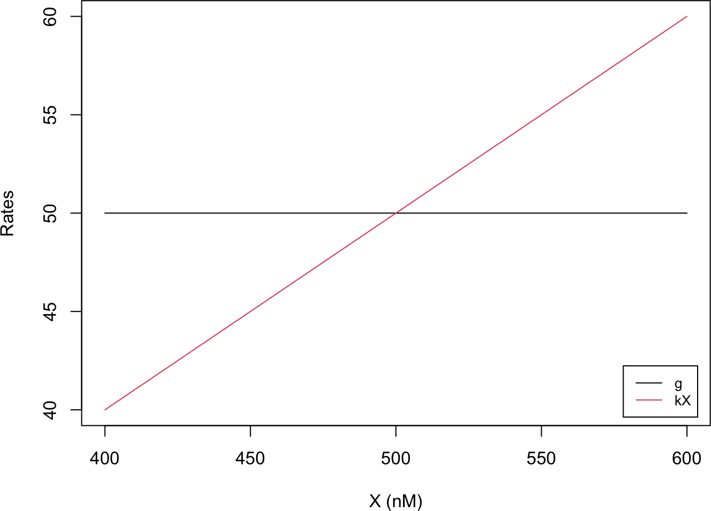
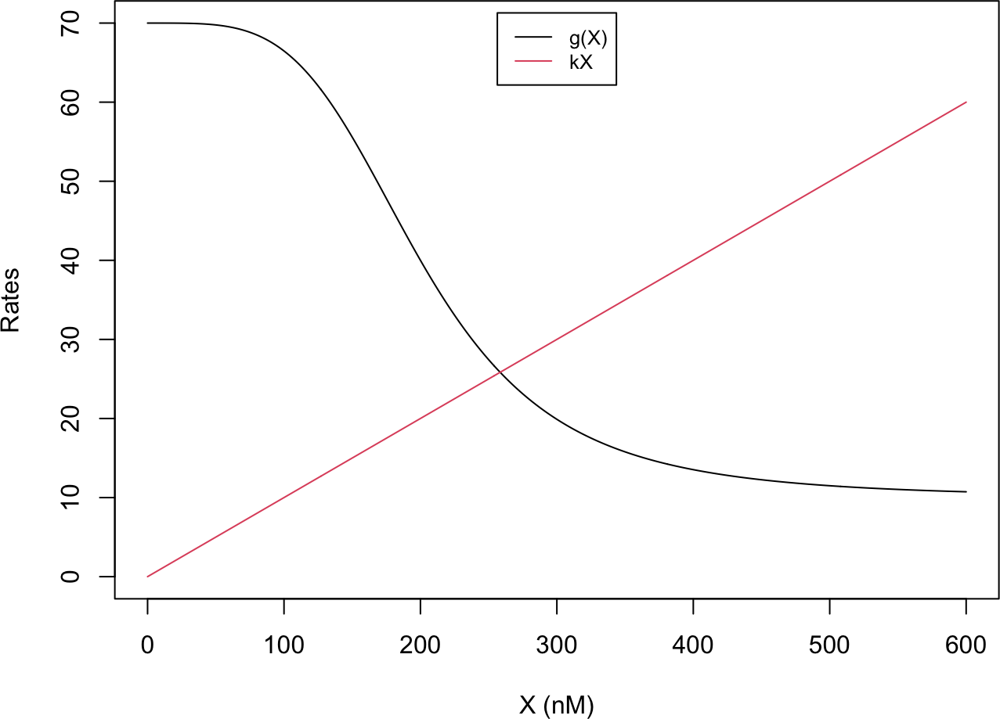
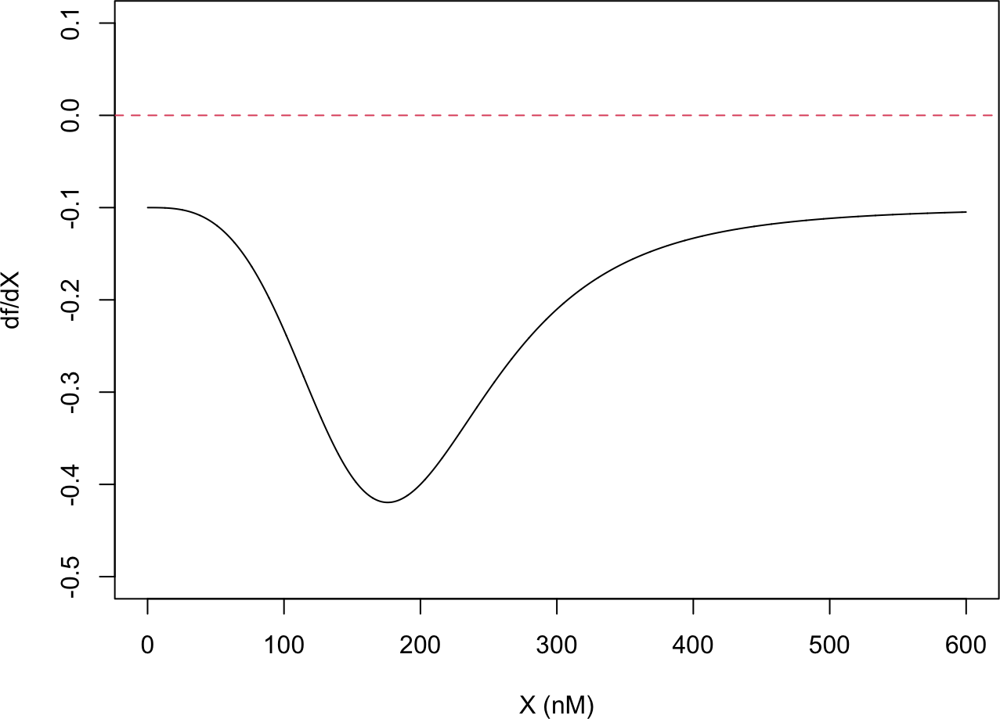
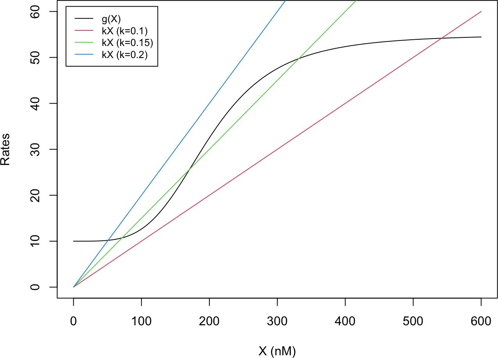
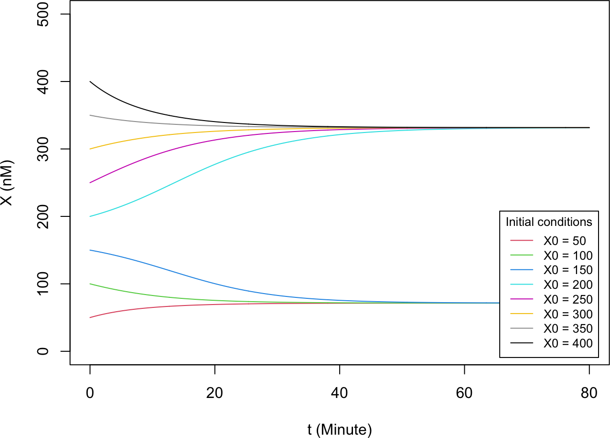
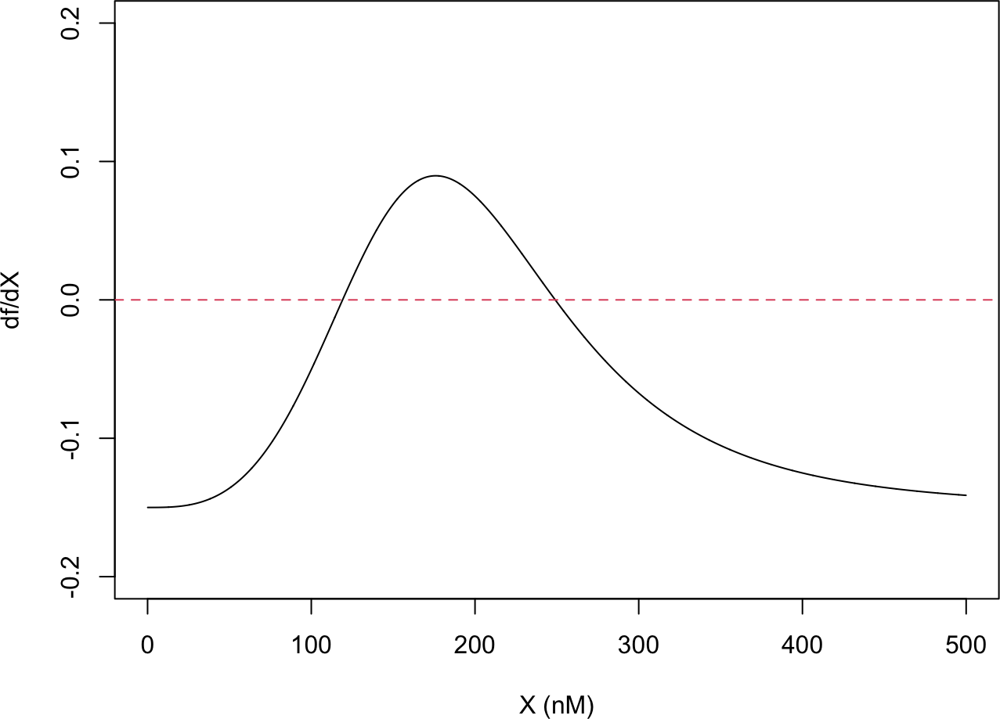
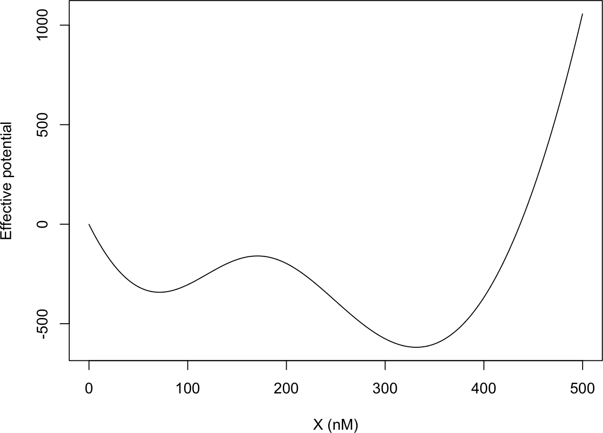
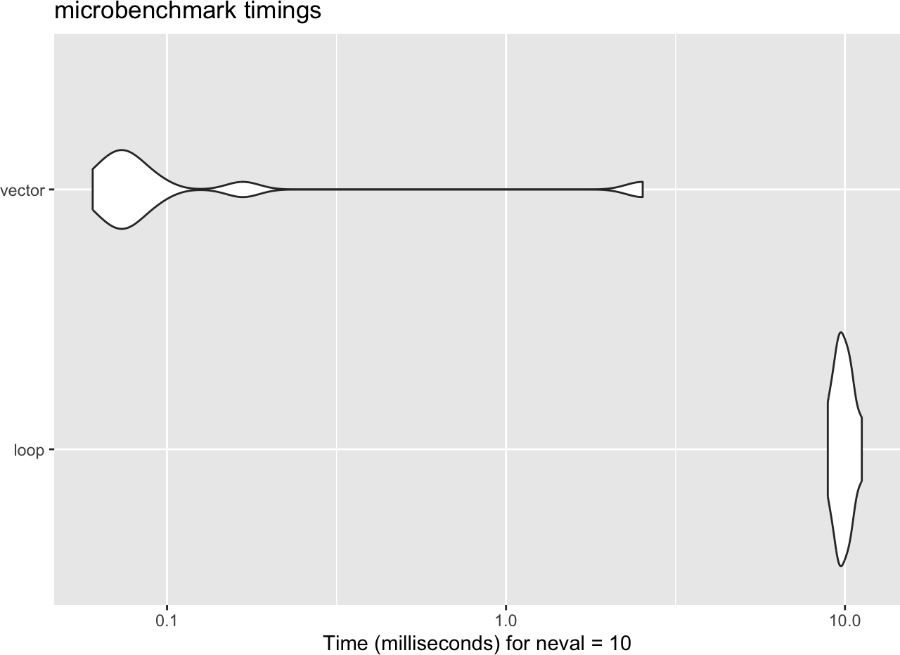
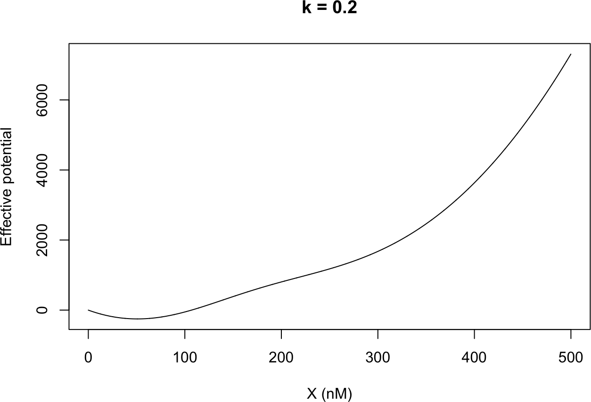

Having learned how to integrate ODEs, we now ask a more qualitative question: given a gene circuit, what are its steady states, are they stable, and how many are there? We answer this graphically and analytically, and then package the answer into an effective potential, a landscape whose valleys are the stable states.
2D.1 Stability of steady states
A steady state \(X_s\) of \(\frac{dX}{dt} = f(X)\) satisfies \(f(X_s) = 0\). It is stable if a small perturbation \(X \to X + \Delta X\) decays back to \(X_s\), and unstable otherwise. Linearizing \(f\) about \(X_s\) gives the criterion
For the constitutively expressed gene from Part 2A, \(f(X) = g - kX\), there is a single steady state \(X_s = g/k\). Plotting the two terms \(g\) and \(kX\) separately, their intersection is the steady state. A small increase in \(X\) raises \(kX\) above \(g\), so \(\frac{dX}{dt} < 0\) and \(X\) falls back; the state is stable (consistent with \(\frac{df}{dX} = -k < 0\)).
The self-inhibiting gene, \(f(X) = g_0 + g_1 H^{inh}(X) - kX\), likewise has a single, stable steady state: \(g(X)\) decreases monotonically, so it crosses the line \(kX\) exactly once, and \(\frac{df}{dX} < 0\) there. We confirm this by computing \(\frac{df}{dX}\) numerically with a central finite difference: at the steady state (around 250 nM) it is negative, so the state is stable.
NoteRecipe 2D.1.1
Objective. Decide whether a gene circuit’s steady state is stable or unstable.
Model. A self-inhibiting gene: basal transcription plus a repressive Hill function, minus linear degradation, f(X) = g0 + g1/(1 + (X/Xth)^n) - k*X.
Method. Linear stability: a steady state (f(X) = 0) is stable if the slope df/dX there is negative, estimated with a central finite difference.
Test.g0 = 10, g1 = 60, Xth = 200, n = 4, k = 0.1; the single steady state is near 250 nM.
Show. The steady-state value and the sign of df/dX there, with the stability verdict.
Verification.df/dX at the steady state (about 250 nM) is negative, so the state is stable.
R implementation
# Constitutive gene: dX/dt = g - kXg <-50; k <-0.1X_all <-seq(400, 600, 1)plot(X_all, rep(g, length(X_all)), type ="l", col =1,xlab ="X (nM)", ylab ="Rates", xlim =c(400, 600), ylim =c(40, 60))lines(X_all, k * X_all, col =2)legend("bottomright", inset =0.02, legend =c("g", "kX"), col =1:2, lty =1, cex =0.8)

# Self-inhibiting gene: g(X) = g0 + g1 * H_inh(X)hill_inh <-function(X, X_th, n) { # inhibitory Hill function a <- (X / X_th)^n1/ (1+ a)}g0 <-10; g1 <-60; k <-0.1; X_th <-200; n <-4X_all <-seq(0, 600, 1)plot(X_all, g0 + g1 *hill_inh(X_all, X_th, n), type ="l", col =1,xlab ="X (nM)", ylab ="Rates", xlim =c(0, 600), ylim =c(0, 70))lines(X_all, k * X_all, col =2)legend("top", inset =0.02, legend =c("g(X)", "kX"), col =1:2, lty =1, cex =0.8)

# df/dX by a central finite difference (vectorized)f_1g_self_inh <-function(X, g0, g1, X_th, n, k) g0 + g1 *hill_inh(X, X_th, n) - k * Xcal_dfdx <-function(X_all, dt, derivs, ...) { f_all <-derivs(X_all, ...) f_plus <-c(f_all[-1], NA) # f(X + dX) f_minus <-c(NA, f_all[-length(f_all)]) # f(X - dX) (f_plus - f_minus) / (2* dt) # (f(X+dX) - f(X-dX)) / (2 dX)}X_all <-seq(0, 600, 0.1)dfdX <-cal_dfdx(X_all, dt =0.1, derivs = f_1g_self_inh,g0 =10, g1 =60, X_th =200, n =4, k =0.1)plot(X_all, dfdX, type ="l", col =1,xlab ="X (nM)", ylab ="df/dX", xlim =c(0, 600), ylim =c(-0.5, 0.1))abline(h =0, lty =2, col =2)

Python implementation
import numpy as npimport matplotlib.pyplot as plt# Constitutive gene: dX/dt = g - kXg, k =50, 0.1X_all = np.arange(400, 601, 1)plt.plot(X_all, np.full_like(X_all, g, dtype=float), color="black", label="g")plt.plot(X_all, k * X_all, color="red", label="kX")plt.xlabel("X (nM)"); plt.ylabel("Rates"); plt.xlim(400, 600); plt.ylim(40, 60)
The self-activating gene, \(f(X) = g_0 + g_1 H^{ex}(X) - kX\), behaves very differently. Plotting \(g(X)\) and \(kX\) while varying \(k\), the line \(kX\) can cross the sigmoidal \(g(X)\) either once or three times. With \(k = 0.15\) there are three steady states: the outer two are stable and the middle one is unstable. A system with more than one stable steady state is called multistable (here, bistable) (Alon 2019).
Intuitively, when \(X\) is low there is too little protein to activate transcription, so \(X\) stays low; when \(X\) is high it activates its own promoter, so \(X\) stays high. Simulating the ODE (with RK4) from different initial conditions shows the trajectories converging to the two stable states, with the unstable state acting as the watershed between their basins. Computing \(\frac{df}{dX}\) confirms the picture: it crosses zero three times, negative at the two outer (stable) states and positive at the middle (unstable) one.
R implementation
# self-activating gene: g(X) vs kX for three k valueshill_ex <-function(X, X_th, n) { # excitatory Hill function a <- (X / X_th)^n a / (1+ a)}g0 <-10; g1 <-45; X_th <-200; n <-4X_all <-seq(0, 600, 1)plot(X_all, g0 + g1 *hill_ex(X_all, X_th, n), type ="l", col =1,xlab ="X (nM)", ylab ="Rates", xlim =c(0, 600), ylim =c(0, 60))lines(X_all, 0.10* X_all, col =2)lines(X_all, 0.15* X_all, col =3)lines(X_all, 0.20* X_all, col =4)legend("topleft", inset =0.02,legend =c("g(X)", "kX (k=0.1)", "kX (k=0.15)", "kX (k=0.2)"),col =1:4, lty =1, cex =0.8)

# simulate the ODE (RK4) from several initial conditionslibrary(deSolve)f_1g_self_act <-function(X, g0, g1, X_th, n, k) g0 + g1 *hill_ex(X, X_th, n) - k * Xdy_self_act <-function(t, y, parms) {with(as.list(c(y, parms)), list(g0 + g1 *hill_ex(y, X_th, n) - k * y))}parms <-c(g0 =10, g1 =45, X_th =200, n =4, k =0.15)t_all <-seq(0, 80, 0.1)X0_all <-seq(50, 400, 50)plot(NULL, xlab ="t (Minute)", ylab ="X (nM)", xlim =c(0, 80), ylim =c(0, 500))for (i inseq_along(X0_all)) { res <-ode(y = X0_all[i], times = t_all, func = dy_self_act, parms = parms, method ="rk4")lines(res[, 1], res[, 2], col = i +1)}legend("bottomright", inset =0.02, title ="Initial conditions",legend =paste0("X0 = ", X0_all), col =seq_along(X0_all) +1, lty =1, cex =0.8)

# df/dX crosses zero three times (two stable, one unstable)X_all <-seq(0, 500, 0.1)dfdX <-cal_dfdx(X_all, dt =0.1, derivs = f_1g_self_act,g0 =10, g1 =45, X_th =200, n =4, k =0.15)plot(X_all, dfdX, type ="l", col =1,xlab ="X (nM)", ylab ="df/dX", xlim =c(0, 500), ylim =c(-0.2, 0.2))abline(h =0, lty =2, col =2)

Python implementation
# self-activating gene: g(X) vs kX for three k valuesdef hill_ex(X, X_th, n): # excitatory Hill function a = (X / X_th)**nreturn a / (1+ a)g0, g1, X_th, n =10, 45, 200, 4X_all = np.arange(0, 601, 1)plt.plot(X_all, g0 + g1 * hill_ex(X_all, X_th, n), color="black", label="g(X)")plt.plot(X_all, 0.10* X_all, color="red", label="kX (k=0.1)")plt.plot(X_all, 0.15* X_all, color="green", label="kX (k=0.15)")plt.plot(X_all, 0.20* X_all, color="blue", label="kX (k=0.2)")plt.xlabel("X (nM)"); plt.ylabel("Rates"); plt.xlim(0, 600); plt.ylim(0, 60)
A gene circuit is a non-equilibrium system, so energy is not strictly defined. Still, for a one-variable system we can make an analogy with an overdamped particle whose position is \(X\) and whose velocity \(\frac{dX}{dt} = f(X)\) is proportional to the force \(-\,U'(X)\)(Strogatz 2015). This defines an effective potential
\[U(X) = -\int_{X_0}^{X} f(x)\,dx + U(X_0) ,\]
a one-dimensional version of Waddington’s epigenetic landscape (Waddington 1957), with stable states at the valleys and unstable states at the peaks. We set \(U(0) = 0\) and integrate with the trapezoidal rule (Press et al. 2007):
We illustrate this for the self-activating gene at \(k = 0.15\). The resulting potential has two basins, around 100 nM and 300 nM (exactly the two stable steady states), separated by a barrier near 200 nM (the unstable state). This gives an intuitive picture of a multistable system, and of how stable each state is: the right basin sits lower (more stable), and the barrier height reflects how easily gene-expression noise could drive a transition between the two states (discussed further in Parts 4 and 6). We compute the potential two ways, with an explicit loop and with a more concise, faster vectorized cumulative sum, then benchmark the two. Finally we show the potential for \(k = 0.2\) and \(k = 0.1\); both have a single well (monostable), in contrast to the bistable \(k = 0.15\).
NoteRecipe 2D.3.1
Objective. Compute and plot the effective potential of a one-variable gene circuit to see its stable and unstable states as valleys and peaks.
Model. A self-activating gene: basal transcription plus an excitatory Hill function, minus linear degradation, f(X) = g0 + g1*(X/Xth)^n/(1 + (X/Xth)^n) - k*X.
Method. The effective potential U(X) = -integral of f(x) dx with U(0) = 0, accumulated by the trapezoidal rule U(X+dx) = U(X) - (f(X) + f(X+dx))/2 * dx.
Test.g0 = 10, g1 = 45, Xth = 200, n = 4, at k = 0.15 (and again k = 0.2 and k = 0.1).
Show. A plot of the effective potential U(X) at k = 0.15, 0.2, and 0.1.
Verification. At k = 0.15 the potential has two basins (near 72 and 332 nM, the stable states) split by a barrier near 171 nM (the unstable state); at k = 0.2 and k = 0.1 it has a single well.
R implementation
# Trapezoidal integration with an explicit loopcal_int <-function(Xmin, Xmax, dX, f, ...) { X_all <-seq(Xmin, Xmax, dX) nX <-length(X_all) U_all <-numeric(nX)for (i in1:(nX -1)) { X <- X_all[i] U_all[i +1] <- U_all[i] - (f(X, ...) +f(X + dX, ...)) /2* dX }cbind(X_all, U_all)}res1 <-cal_int(Xmin =0, Xmax =500, dX =0.1, f = f_1g_self_act,g0 =10, g1 =45, X_th =200, n =4, k =0.15)plot(res1[, 1], res1[, 2], type ="l", col =1,xlab ="X (nM)", ylab ="Effective potential", xlim =c(0, 500))
# Same integration, vectorized with a cumulative sumcal_int_vector <-function(Xmin, Xmax, dX, f, ...) { X_all <-seq(Xmin, Xmax, dX) f_all <-f(X_all, ...) f_plus <-c(f_all[-1], NA) # f(X + dX) trap <- (f_all + f_plus) * dX /2# trapezoid areas U_all <--cumsum(trap)cbind(X_all, U_all)}res2 <-cal_int_vector(Xmin =0, Xmax =500, dX =0.1, f = f_1g_self_act,g0 =10, g1 =45, X_th =200, n =4, k =0.15)plot(res2[, 1], res2[, 2], type ="l", col =1,xlab ="X (nM)", ylab ="Effective potential", xlim =c(0, 500))

# benchmark the loop against the vectorized versionlibrary(microbenchmark)library(ggplot2)mb <-microbenchmark(loop =cal_int(0, 500, 0.1, f_1g_self_act, g0 =10, g1 =45, X_th =200, n =4, k =0.15),vector =cal_int_vector(0, 500, 0.1, f_1g_self_act, g0 =10, g1 =45, X_th =200, n =4, k =0.15),times =10, unit ="ms")autoplot(mb)

# effective potential for k = 0.2 (monostable)res3 <-cal_int_vector(0, 500, 0.1, f_1g_self_act, g0 =10, g1 =45, X_th =200, n =4, k =0.2)plot(res3[, 1], res3[, 2], type ="l", col =1, main ="k = 0.2",xlab ="X (nM)", ylab ="Effective potential", xlim =c(0, 500))

# effective potential for k = 0.1 (monostable)res4 <-cal_int_vector(0, 500, 0.1, f_1g_self_act, g0 =10, g1 =45, X_th =200, n =4, k =0.1)plot(res4[, 1], res4[, 2], type ="l", col =1, main ="k = 0.1",xlab ="X (nM)", ylab ="Effective potential", xlim =c(0, 500))
Alon, Uri. 2019. An Introduction to Systems Biology: Design Principles of Biological Circuits. 2nd ed. Chapman; Hall/CRC. https://doi.org/10.1201/9780429283321.
Press, William H., Saul A. Teukolsky, William T. Vetterling, and Brian P. Flannery. 2007. Numerical Recipes: The Art of Scientific Computing. 3rd ed. Cambridge University Press.
Strogatz, Steven H. 2015. Nonlinear Dynamics and Chaos: With Applications to Physics, Biology, Chemistry, and Engineering. 2nd ed. Westview Press.
Waddington, Conrad Hal. 1957. The Strategy of the Genes. George Allen & Unwin.